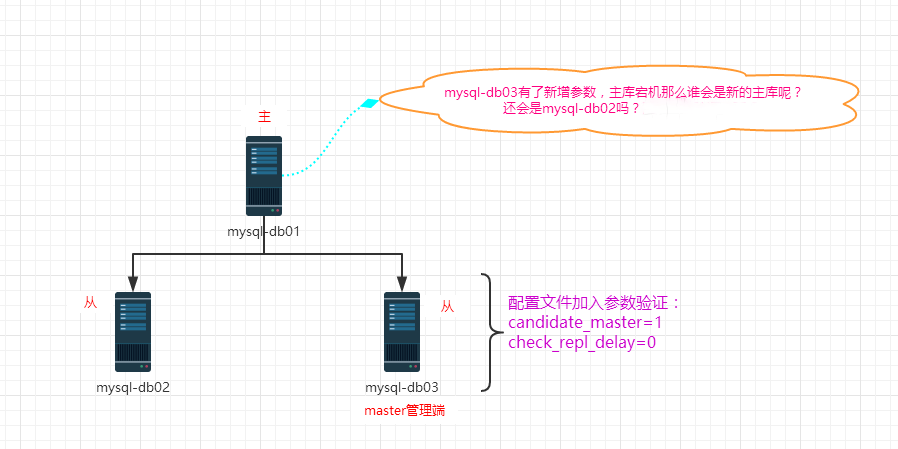
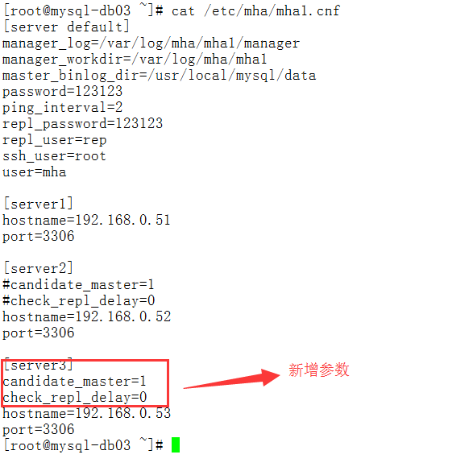

6.MHA参数验证实践

mha配置文件内容如下：

附录：源码安装mha的方法
node节点的源码安装方法：
[root@mysql-db01 ~]# yum -y install perl-DBD-MySQL perl-Config-Tiny perl-Params-Validate perl-CPAN perl-devel perl-ExtUtils-CBuilder perl-ExtUtils-MakeMaker
[root@mysql-db01 ~]# tar xf mha4mysql-node-0.56.tar.gz -C /usr/src/
[root@mysql-db01 ~]# cd /usr/src/mha4mysql-node-0.56/
[root@mysql-db01 mha4mysql-node-0.56]# perl Makefile.PL
[root@mysql-db01 mha4mysql-node-0.56]# make && make install
manager节点的源码安装方法：
[root@mysql-db01 ~]# yum -y install perl-DBD-MySQL perl-Config-Tiny perl-Params-Validate perl-CPAN perl-devel perl-ExtUtils-CBuilder perl-ExtUtils-MakeMaker
[root@mysql-db01 ~]# tar xf mha4mysql-manager-0.56.tar.gz -C /usr/src/
[root@mysql-db01 ~]# cd /usr/src/mha4mysql-manager-0.56/
[root@mysql-db01 mha4mysql-manager-0.56]# perl Makefile.PL
[root@mysql-db01 mha4mysql-manager-0.56]# make && make install